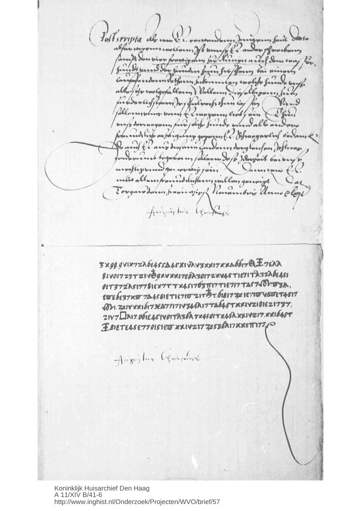
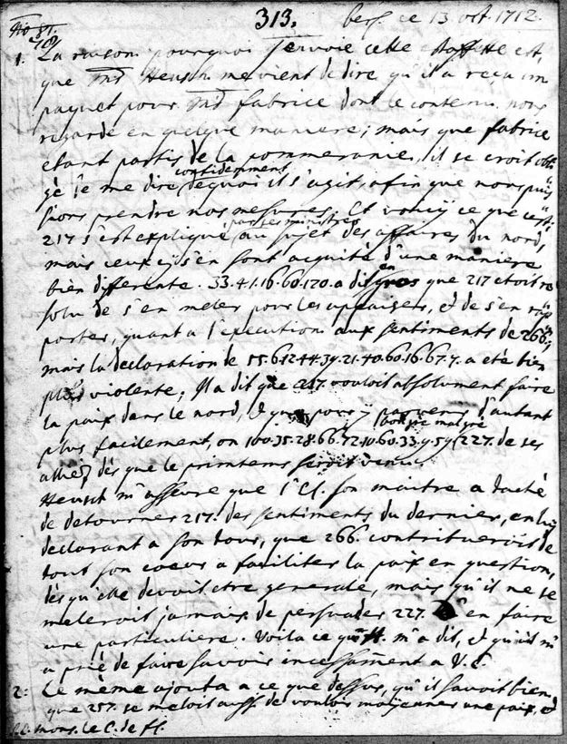
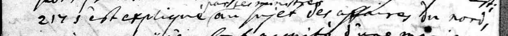
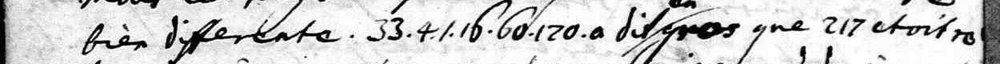
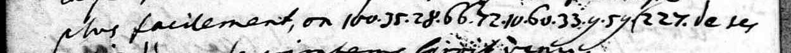
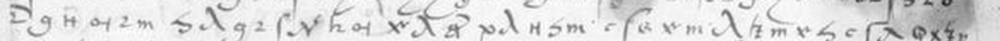

Private preview for review. Not published, not linked from anywhere.
What the cipher said
A telegram about the plot to burn New York; an Elector's secret about the next emperor; a Saxon envoy's names for who in London said what. Chosen for what our reading itself says, not for the history around it.



“Send on a man to identify him”: a telegram about the plot to burn New York
A War Department telegram in the Union's code tells New York's police chief that a man believed to be the chief conspirator in the attempt to burn New York is in the Old Capitol Prison, and asks him to send someone to identify him.


An Elector's secret, told in signs: the Emperor wants Maximilian elected now
In cipher, Elector August of Saxony tells William of Orange that the Emperor has asked him, through a formal embassy, to elect his son Maximilian King of the Romans in the Emperor's own lifetime, and asks him to keep it secret.


Names in cipher: who in London said what about the war in the North
Manteuffel's postscript is in clear French; what he put in cipher are the names. Read, they make the report say that Oxford called the Queen too far off to meddle in the North, while Bolingbroke would detach Denmark from its allies by the spring.





All readings
Each entry is a historical cipher letter we read, in part or in full. On every item page the claim comes first, in one plain sentence, and the proof sits directly underneath it: which signs were read and how, the script that regenerates the reading, the control it had to beat, the two independent audits that searched for it in print, and links to the manuscript image and the printed edition, so that a reader can check each step from their own desk.
Cipher passages read inside a document whose clear parts or context were already known.
Short cipher texts (mostly telegrams) read in full.
Scattered words and short phrases read; not yet a connected passage.
A key or mapping recovered for a cipher whose plain text was already in print.
Identifications, corrections and checked material handed on; no new reading claimed.
Counts are in documents. 216 targets in work (open, partial or blocked); only audited results are listed here. Readings worth a historian's attention · How to read this.
| Date | From / to | Place | Held | Language | What it says | Outcome | Search result | Depth |
|---|---|---|---|---|---|---|---|---|
| 22 Oct 1573 | Jan and Lodewijk van Nassau → William of Orange | Dillenburg | Royal House Archive, The Hague KHA A 3, 895/I (WVO 5797), Nassau brothers to Orange, 22 Oct 1573 |  In the blanks Groen left in WVO 5797 the brothers ... In the blanks Groen left in WVO 5797 the brothers ... | Recovered passages | N4 | partially deciphered | |
| 1862 | British Library BL Add MS 6912 | BL Add MS 6912, Charles I's cipher paper countersigned by Digby, identified ... | Contributions | N0 | ||||
| 17 Apr 1574 | Jan van Nassau → William of Orange | Cologne | Royal House Archive, The Hague WVO 5551, Jan van Nassau to Orange, Cologne, 17 Apr 1574 (cipher lines) | German | Jan van Nassau's two closing cipher lines, written three days ... | Fragments read | N3 | fragments read |
| 1809 | Torre do Tombo, Lisbon ANTT PT/TT/CLNH/0086/11 m0002 (Linhares letter fragment) | Portuguese | The surviving page of the Linhares letter says that something ... | Recovered passages | N3 | partially deciphered | ||
| 1657 | Van Beuningen → De Witt | Nationaal Archief, The Hague Nationaal Archief 3.01.17 inv.nr 1538 ff.210-211 (cipher copy of Van Beuningen to De Witt, ... | Van Beuningen writes that the King of Denmark's agent in ... | Keys to known text | N3 | partially deciphered | ||
| 1561 | Sächsisches Hauptstaatsarchiv Dresden Dresden Loc. 9941/3 f.266r-v (WVO 53), Orange to August, Breda 24 Oct 1561 (cipher ... | German | Orange's cipher postscript reports news that the Prince of Spain ... | Recovered passages | N4 | largely deciphered | ||
| 18 Nov 1561 | Elector August → Orange | Torgau | Royal House Archive, The Hague KHA A 11/XIV B/41-6 p3 (WVO 57), August to Orange, Torgau 18 Nov 1561 ... | German | August tells Orange in confidence that the Emperor has recently, ... | Recovered passages | N4 | largely deciphered |
| 20 May 1530 | Gramont → Villandry | Rome | Bibliothèque nationale de France BnF fr.2980 f.29r (no.21), Gramont to Villandry, Rome, 20 May 1530 | French |  Gramont tells Villandry that he has given the bearer an ... | Recovered passages | N4 | partially deciphered |
| 1864 | Huntington Library Huntington mssEC 19 p.49, E4 (Fox to Butler, 21 Apr 1864) | English | Fox asks Butler to block the channel at Roanoke Island ... | Completed readings | N4 | deciphered | ||
| 27 Jan 1557 | Danzay → the Cardinal of Lorraine | dated | Bibliothèque nationale de France BnF fr.20140 f.35r-36r, Danzay to the Cardinal of Lorraine, 27 Jan 1557 | Danzay's cipher speaks of the King of Denmark and of ... | Recovered passages | N4 | partially deciphered | |
| 1862 | Huntington Library Huntington mssEC 15 (the 1862 'Ciphers Sent' readings) | English | Eckert keys, 23 checked readings and the corpus-status finding offered to the ... | Contributions | N1 | |||
| 1530 | Bibliothèque nationale de France BnF fr.2980 f.30r-v (no.22), Gramont to Francis I, Rome, 20 May 1530 | French | Writing to the King ('Sire'), Gramont reports that someone thinks ... | Fragments read | N4 | fragments read | ||
| 13 March 1655 | William Stamford → Thurloe's office | Calais | printed in Birch, Thurloe State Papers (1742) Bodleian MS Rawl. A. 24 (Stamford to Thurloe's office, Calais, 13 Mar 1655; printed ... | Stamford writes in cipher that the matter came to his ... | Recovered passages | N4 | partially deciphered | |
| 23 July 1632 | Gustav II Adolf → Axel Oxenstierna | Nürnberg | printed in Rikskanslern Axel Oxenstiernas skrifter Oxenstierna series, letter 602 (Gustav II Adolf to Oxenstierna, 23 July 1632, printed cipher) | Gustav II Adolf to Axel Oxenstierna, Nürnberg 23 July 1632 (printed cipher, ... | Contributions | N0 | ||
| 16 Jan 1781 | La Luzerne → Destouches | Philadelphia | Huntington Library Huntington mssDE 108(A) | La Luzerne to Destouches, Philadelphia 16 Jan 1781 (Huntington mssDE 108(A)): partial ... | Contributions | N0 | ||
| 1727 | Huntington Library Huntington mssBLA 186 (Madrid, 13 Sept 1728, two cipher lines) | In BLA 191(a) the writer complains that Mr Keene ('monsieur ... | Recovered passages | N4 | partially deciphered | |||
| 1573 | Lodewijk van Nassau → William of Orange | four cipher letters | Royal House Archive, The Hague WVO 4610 (Lodewijk van Nassau to Orange, 1573-74) | WVO 4610 opens 'il fault que on pardonne' in connection ... | Recovered passages | N4 | partially deciphered | |
| 18 Oct 1572 | William of Orange → Jan van Nassau | Royal House Archive, The Hague WVO 5200 (Orange to Jan van Nassau, 18 Oct 1572), page 1 | German | William of Orange to Jan van Nassau, 18 Oct 1572 (WVO 5200): ... | Contributions | N1 | ||
| 21 Nov 1573 | Jan van Nassau → William of Orange | Dillenburg | Royal House Archive, The Hague WVO 5549 (Jan van Nassau to Orange, 21 Nov 1573), closing stretch | German | Jan van Nassau to William of Orange, Dillenburg, 21 Nov 1573 (WVO ... | Contributions | N1 | |
| 1648 | Bibliothèque nationale de France BnF Espagnol 144 f.22r-v (Gallica btv1b10035717h, canvases 58-59), instruction to Mercy, Barneton, 6 June ... | Spanish | The instruction tells Mercy to go to Cleves to see ... | Fragments read | N4 | fragments read | ||
| 14 September 1570 | Lodovico Birago → the Duke of Nevers | Saluzzo | Bibliothèque nationale de France BnF fr.3251 f.11r (Gallica btv1b9060248g canvas 12), no.6, Birago to Nevers, Saluzzo, 14 Sept ... | Italian | BnF fr.3251 f.11r, Lodovico Birago to the Duke of Nevers, Saluzzo, 14 ... | Fragments read | N3 | fragments read |
| 12 October 1570 | Lodovico Birago → the Duke of Nevers | Bibliothèque nationale de France BnF fr.3251 f.21v (no.11), Birago to Nevers, 12 Oct 1570 | Italian | BnF fr.3251 f.21v, Lodovico Birago to the Duke of Nevers, 12 October ... | Fragments read | N3 | fragments read | |
| 9 May 1571 | Lodovico Birago → the Duke of Nevers | Bibliothèque nationale de France BnF fr.3251 f.87 (no.45), Birago to Nevers, 9 May 1571 | Italian | BnF fr.3251 f.87, Lodovico Birago to the Duke of Nevers, 9 May ... | Fragments read | N3 | fragments read | |
| 7 February 1572 | Lodovico Birago → the Duke of Nevers | Saluzzo | Bibliothèque nationale de France BnF fr.3251 f.139v (no.71), Birago to Nevers, 7 Feb 1572 | Italian | BnF fr.3251 f.139v, Lodovico Birago to the Duke of Nevers, Saluzzo, 7 ... | Fragments read | N4 | fragments read |
| 27 August 1572 | Lodovico Birago → the Duke of Nevers | Saluzzo | Bibliothèque nationale de France BnF fr.3251 ff.174r-175v (no.86), Birago to Nevers, 27 Aug 1572 | Italian | Birago names the Huguenots, Carmagnola and the Baron des Adrets, ... | Recovered passages | N4 | partially deciphered |
| 2 October 1572 | Lodovico Birago → the Duke of Nevers | Saluzzo | Bibliothèque nationale de France BnF fr.3251 ff.184r-185v (no.90), Birago to Nevers, 2 Oct 1572 | Italian | Birago writes of a negotiation with a count, of articles ... | Recovered passages | N4 | partially deciphered |
| 4 July 1592 | Dinteville → the Duke of Nevers | Langres | Bibliothèque nationale de France BnF fr.3621 f.130r (no.116), Joachim de Dinteville to the Duke of Nevers, Langres, 4 ... | BnF fr.3621 f.130r, Dinteville to the Duke of Nevers, Langres, 4 July ... | Fragments read | N3 | fragments read | |
| c.1589 | Nevers → his son | Bibliothèque nationale de France BnF fr.3416 f.35r, the duc de Nevers to his son (Charles, duc de Rethelois), ... | BnF fr.3416 f.35r, Nevers to his son, c.1589: figure runs read under ... | Fragments read | N4 | fragments read | ||
| Nov 1712 | Manteuffel → Flemming | Berlin | Sächsisches Hauptstaatsarchiv Dresden SHStA Dresden, 10026 Geheimes Kabinett, Loc. 694/08 f.410 lower block (frame 0511), P.S. of ... | French |  In this postscript the Queen of England is named three ... In this postscript the Queen of England is named three ... | Recovered passages | N4 | partially deciphered |
| 4 Jan 1752 | Hellen → Frederick II | The Hague | Royal House Archive, The Hague DECODE R1953 (KHA Prins Willem V inv. 196, now A31-1148): W. B. von der ... | French | Hellen to Frederick II, The Hague, 4 Jan 1752: intercepted despatch read ... | Fragments read | N3 | fragments read |
| 13 Mar 1572 | Birago → Nevers | Bibliothèque nationale de France BnF fr.3252 f.117r (no.77): Lodovico Birago to the duc de Nevers, 13 March 1572 | French | Birago to Nevers, 13 Mar 1572 (BnF fr.3252 f.117r): French fragments read ... | Fragments read | N4 | fragments read | |
| 7 Sept 1572 | Saint-Gouard → Charles IX | Bibliothèque nationale de France BnF fr.16104 f.173r-v (ink 54): Jean de Vivonne, sr de Saint-Gouard, to Charles IX, ... | Saint-Gouard to Charles IX, 7 Sept 1572 (BnF fr.16104 f.173r-v): French fragments ... | Fragments read | N3 | fragments read | ||
| 5 Sept 1572 | Saint-Gouard → the duc d'Anjou | Bibliothèque nationale de France BnF fr.16104 ff.170r-171v (ink 53): Jean de Vivonne, sr de Saint-Gouard, to the duc ... | Saint-Gouard to the duc d'Anjou, 5 Sept 1572 (BnF fr.16104 ff.170r-171v): French ... | Fragments read | N3 | fragments read | ||
| 10 Oct 1573 | Saint-Gouard → Charles IX | Bibliothèque nationale de France BnF fr.16105 ff.190r-194r (ink 63, cipher part of ff.187r-194r): Jean de Vivonne, sr de ... | Saint-Gouard to Charles IX, 10 Oct 1573 (BnF fr.16105 ff.190r-194r): French fragments ... | Fragments read | N3 | fragments read | ||
| 1570 | Bibliothèque nationale de France BnF Clairambault 1161, Gallica btv1b90010063 canvases c185R-c188L (IIIF f186-f189); finding aid cc137837/cd0e35310; Lauer t. ... | French | BnF Clairambault 1161, 'Advis de flandres' (six cipher leaves, c. 1570, Noailles ... | Fragments read | N3 | fragments read | ||
| 29 Jan 1665 | R. de Gravel → Colbert | Ratisbon | Bibliothèque nationale de France BnF Mélanges de Colbert 127, f.349r-v (Gallica btv1b10035540v canvases 356-357); DECODE R2678 | In Gravel's letter to Colbert of 29 Jan 1665, the ... | Fragments read | N3 | fragments read | |
| 1864 | Huntington Library Huntington mssEC 19 p.90, (QMG to Canby, 11 June 1864) | English | On 11 June 1864 the Quartermaster-General telegraphs Canby at Vicksburg ... | Completed readings | N4 | deciphered | ||
| 1864 | Huntington Library Huntington mssEC 19 p.56, (Augur to Meade, 26 Apr 1864) | English | Augur tells Meade he cannot send the party without co-operation ... | Completed readings | N3 | largely deciphered | ||
| 1864 | Huntington Library Huntington mssEC 19 p.18, (Howell to Ingalls, 8 Mar 1864) | English | Captain Howell tells Ingalls that Rucker has sent all available ... | Completed readings | N3 | deciphered | ||
| 1864 | Huntington Library Huntington mssEC 19 p.18, (Augur to Ingalls, 9 Mar 1864) | English | At midnight on 9 March 1864 Augur tells Ingalls that ... | Completed readings | N3 | deciphered | ||
| 1864 | Huntington Library Huntington mssEC 19 p.87, (Stanton to Dana, 6 June 1864) | English | Stanton asks Dana to learn from Grant whether two French ... | Completed readings | N4 | largely deciphered | ||
| 1864 | Huntington Library Huntington mssEC 19 pp.42-43, pointer 8934-8935, E21 (Meigs to Biggs, 19 Apr 1864) | English | The Quartermaster-General tells Lt. Col. Biggs at Fort Monroe that ... | Completed readings | N3 | deciphered | ||
| 1864 | Huntington Library Huntington mssEC 19 p.63, pointer 8955, E23 (Fox to Olcott, 2 May 1864) | English | Assistant Secretary Fox tells Olcott he is commissioned to investigate ... | Completed readings | N3 | largely deciphered | ||
| 1864 | Huntington Library Huntington mssEC 19 p.197, pointer 9091, E27 (Turner to 'beverage', 10 Oct 1864) | English | Judge Advocate Turner reports that two men, Jewett and Siebert, ... | Completed readings | N3 | largely deciphered | ||
| 1864 | Huntington Library Huntington mssEC 19 pp.216-217, pointer 9110-9111, E37 (Fry to Manierre (and to W. E. ... | English | The Provost Marshal General tells Capt. B. F. Manierre, provost ... | Completed readings | N3 | largely deciphered | ||
| 1864 | Huntington Library Huntington mssEC 19 p.152, pointer 9045, E38 (Seward to Palfrey, Boston postmaster) | English | Seward tells the Boston postmaster that a letter with a ... | Completed readings | N3 | largely deciphered | ||
| 1864 | Huntington Library Huntington mssEC 19 p.152, pointer 9045, E39 (Seward to Wakeman, New York postmaster) | English | Seward tells the New York postmaster to seize three remittances ... | Completed readings | N3 | largely deciphered | ||
| 1864 | Huntington Library Huntington mssEC 19 p.153, pointer 9046, E40 (Seward to Murray and Harrington to Barney, ... | English | Seward orders the U.S. Marshal at New York to detain ... | Completed readings | N3 | largely deciphered | ||
| 1864 | Huntington Library Huntington mssEC 19 p.203, pointer 9097, E41 (F. W. Seward to C. A. Seward, ... | English | Frederick Seward sends C. A. Seward in New York the ... | Completed readings | N3 | largely deciphered | ||
| 1864 | Huntington Library Huntington mssEC 19 p.53, pointer 8945, E42 (Meigs to Biggs, 25 Apr 1864) | English | Meigs tells Biggs that winds and waves hold up the ... | Completed readings | N3 | largely deciphered | ||
| 1864 | Huntington Library Huntington mssEC 19 p.83, pointer 8975, E43 (Rucker to Biggs, 29 May 1864) | English | Rucker asks Biggs whether the coal for the York and ... | Completed readings | N3 | largely deciphered | ||
| 1864 | Huntington Library Huntington mssEC 19 p.235, pointer 9129, E45 (Rucker to Newport, Baltimore) | English | Rucker tells Colonel Newport at Baltimore to send every steamer ... | Completed readings | N3 | largely deciphered | ||
| 1864 | Huntington Library Huntington mssEC 19 p.236, pointer 9130, E46 (to John A. Kennedy, New York police) | English | Kennedy, New York's police superintendent, is told that a man ... | Completed readings | N3 | largely deciphered | ||
| 1864 | Huntington Library Huntington mssEC 19 p.30, pointer 8922, E47 | English | Meigs tells Biggs at Fort Monroe to send the steamer ... | Completed readings | N3 | largely deciphered | ||
| 1864 | Huntington Library Huntington mssEC 19 p.149, pointer 9042, E50 | English | Meigs tells Biggs to provision and water the Continental, bring ... | Completed readings | N3 | largely deciphered | ||
| 1864 | Huntington Library Huntington mssEC 19 p.204, pointer 9098, E51 | English | W. H. Whiton urges Adna Anderson, Government Railroads, Nashville, to ... | Completed readings | N3 | largely deciphered | ||
| 1864 | Huntington Library Huntington mssEC 19 p.223, pointer 9117, E52 | English | Dana tells Wallace at Baltimore that a rebel agent calling ... | Completed readings | N3 | largely deciphered | ||
| 1864 | Huntington Library Huntington mssEC 19 p.161, pointer 9055, E33 | English | On 22 Aug 1864 Washington tells McCaine at Harper's Ferry, ... | Completed readings | N3 | largely deciphered | ||
| 1864 | Huntington Library Huntington mssEC 19 p.35, pointer 8927, E57 | English | Meigs tells Captain Thomas, quartermaster, that if on examination the ... | Completed readings | N3 | largely deciphered | ||
| 1864 | Huntington Library Huntington mssEC 19 p.59, pointer 8951, E59 | English | Washington tells Sherman at Nashville that the Cavalry Bureau reports ... | Completed readings | N3 | largely deciphered | ||
| 1864 | Huntington Library Huntington mssEC 19 p.29, pointer 8921, E62 | English | Meigs tells Biggs at Fort Monroe to order the Spaulding ... | Completed readings | N3 | largely deciphered | ||
| 1864 | Huntington Library Huntington mssEC 19 p.119, pointer 9011 | English | Meigs tells Ingalls that about a thousand cavalry horses on ... | Completed readings | N3 | partially deciphered | ||
| 1864 | Huntington Library Huntington mssEC 19 p.87, pointer 8979 | English | The Secretary of War asks Dana to find out whether ... | Completed readings | N3 | partially deciphered | ||
| 1864 | Huntington Library Huntington mssEC 19 p.245, pointer 9139 | English | Meigs tells Sheridan that the Secretary of War has been ... | Completed readings | N3 | partially deciphered | ||
| 1864 | Huntington Library Huntington mssEC 19 p.127, pointer 9019 | English | Meigs asks Ingalls whether, under changed circumstances, he needs more ... | Completed readings | N3 | partially deciphered | ||
| 1864 | Huntington Library Huntington mssEC 19 p.45, pointer 8937 | English | Captain Wise at the Astor House, New York, is told ... | Completed readings | N3 | partially deciphered | ||
| 1864 | Huntington Library Huntington mssEC 19 p.257, pointer 9151, E66 | English | On 3 Jan 1865 the Quartermaster General's office tells Van ... | Completed readings | N3 | largely deciphered | ||
| 1864 | Huntington Library Huntington mssEC 19 p.146, pointer 9039, E68 | English | On 7 Aug 1864 Stanton has Captain Bruch at Louisville ... | Completed readings | N3 | largely deciphered | ||
| 1864 | Huntington Library Huntington mssEC 19 p.22, pointer 8914 | English | On 16 Mar 1864 Benham reports to Humphreys that the ... | Completed readings | N3 | largely deciphered | ||
| 1864 | Huntington Library Huntington mssEC 18 p.48, pointer 9714, E78 | English | On 21 Apr 1864 the Quartermaster General's office asks Lt. ... | Completed readings | N3 | largely deciphered | ||
| 1864 | Huntington Library Huntington mssEC 18 p.51, pointer 9717 | English | On 22 Apr 1864 Halleck asks Canby at New York ... | Completed readings | N3 | partially deciphered | ||
| 1864 | Huntington Library Huntington mssEC 18 p.51, pointer 9717 | English | At 10 PM on 22 Apr 1864 Meigs tells Major ... | Completed readings | N3 | largely deciphered | ||
| 1640 | Bibliothèque nationale de France BnF Baluze 170 ff.229r-v (letter ff.228r-230r) | Chavigny tells d'Avaux that the dukes and Madame la Landgrave ... | Recovered passages | N3 | partially deciphered | |||
| 1864 | Huntington Library Huntington mssEC 19 p.73, pointer 8965, E90 | English | At 1.30 PM on 20 May 1864 the Quartermaster General's ... | Completed readings | N3 | largely deciphered | ||
| 1864 | Huntington Library Huntington mssEC 19 p.104, pointer 8996, E92 | English | On 7 July 1864 the Quartermaster General's office tells Captain ... | Completed readings | N3 | partially deciphered | ||
| 1864 | Huntington Library Huntington mssEC 19 p.154, pointer 9047, (second telegram) | English | On 14 Aug 1864 Captain Leet tells Lieutenant Colonel Bowers ... | Completed readings | N3 | partially deciphered | ||
| 1864 | Huntington Library Huntington mssEC 19 p.225, pointer 9119, E97 | English | On 7 Nov 1864 Dana tells General Rosecrans at St. ... | Completed readings | N3 | partially deciphered | ||
| 1864 | Huntington Library Huntington mssEC 19 p.146-147, pointers 9039-9040 | English | On 9 Aug 1864 the Quartermaster General in Washington tells ... | Completed readings | N3 | largely deciphered | ||
| 1864 | Huntington Library Huntington mssEC 19 p.248, pointer 9142 | English | At 11.15 PM on 18 Dec 1864 Eckert in Washington ... | Completed readings | N3 | largely deciphered | ||
| 1864 | Huntington Library Huntington mssEC 19 p.248, pointer 9142 | English | On 18 Dec 1864 Col. Bradley, chief quartermaster at City ... | Completed readings | N3 | partially deciphered | ||
| 1864 | Huntington Library Huntington mssEC 19 p.168, pointer 9062, E123 | English | At 8.30 PM on 3 Sept 1864 Stanton tells General ... | Completed readings | N3 | largely deciphered | ||
| 1864 | Huntington Library Huntington mssEC 19 p.100, pointer 8992, E143 | English | At 3 PM on 30 June 1864 the Quartermaster General ... | Completed readings | N3 | largely deciphered | ||
| 1864 | Huntington Library Huntington mssEC 19 p.151, pointer 9044, E145 | English | On 12 Aug 1864 Captain Leet at Washington reports to ... | Completed readings | N3 | partially deciphered | ||
| 1864 | Huntington Library Huntington mssEC 19 p.245, pointer 9139, E146 | English | On 12 Dec 1864 the Quartermaster General asks Brig. Gen. ... | Completed readings | N3 | partially deciphered | ||
| 1864 | Huntington Library Huntington mssEC 19 p.77, pointer 8969, E106 | English | On the night of 22 May 1864 Halleck's office drafted, ... | Completed readings | N3 | largely deciphered | ||
| 1864 | Huntington Library Huntington mssEC 19 p.159, pointer 9053, E122 | English | On 21 Aug 1864 Augur answers Sheridan's request for Spencer ... | Completed readings | N3 | largely deciphered | ||
| 1864 | Huntington Library Huntington mssEC 19 p.15, pointer 8907, E104 | English | On 4 Mar 1864, at the end of the Kilpatrick-Dahlgren ... | Completed readings | N3 | largely deciphered | ||
| 1864 | Huntington Library Huntington mssEC 25 (obj 5952) p.258, pointer 5802, E162 | English | On 1 Nov 1864, when Butler wanted Napoleon batteries for ... | Completed readings | N3 | largely deciphered | ||
| 1864 | Huntington Library Huntington mssEC 25 (obj 5952) p.258, pointer 5802, E160 | English | On 2 Nov 1864 Butler's chief of artillery reports to ... | Completed readings | N3 | largely deciphered | ||
| 1864 | Huntington Library Huntington mssEC 25 (obj 5952) p.279, pointer 5823, E163 | English | On 9 Dec 1864 Turner tells Butler at Fort Monroe ... | Completed readings | N3 | partially deciphered | ||
| 1864 | Huntington Library Huntington mssEC 25 (obj 5952) p.274, pointer 5818, E167 | English | On 6 Dec 1864 Bradford tells Butler the steamer Russia ... | Completed readings | N3 | partially deciphered | ||
| 1864 | Huntington Library Huntington mssEC 25 (obj 5952) p.243, pointer 5787, E172 | English | On 6 Oct 1864 the City Point railroad's engineer reported ... | Completed readings | N3 | partially deciphered | ||
| 1864 | Huntington Library Huntington mssEC 25 (obj 5952) p.296, pointer 5840, E173 | English | On 26 Dec 1864 Fort Monroe reported to Butler's headquarters ... | Completed readings | N3 | partially deciphered | ||
| 1864 | Huntington Library Huntington mssEC 25 (obj 5952) p.279, pointer 5823, E177 | English | On 8 Dec 1864 Butler's headquarters ordered Fort Monroe to ... | Completed readings | N3 | partially deciphered | ||
| 1712 | Sächsisches Hauptstaatsarchiv Dresden SHStA Dresden, 10026 Geheimes Kabinett, Loc. 694/08 (URL file 0390), Manteuffel to Flemming, 10 ... | French | SHStA Dresden Loc. 694/08 frame 0390 (10 Oct 1712): unglossed cipher spans ... | Fragments read | N3 | fragments read | ||
| 1712 | Sächsisches Hauptstaatsarchiv Dresden SHStA Dresden, 10026 Geheimes Kabinett, Loc. 694/08 (URL file 0391), Manteuffel to Flemming, P.S. ... | French | In his postscript of 13 October 1712 Manteuffel passes on ... | Recovered passages | N3 | partially deciphered | ||
| 1712 | Sächsisches Hauptstaatsarchiv Dresden SHStA Dresden, 10026 Geheimes Kabinett, Loc. 694/08 (URL file 0485), Manteuffel to Flemming, about ... | French | SHStA Dresden Loc. 694/08 frame 0485 (about 12 Nov 1712): unglossed cipher ... | Fragments read | N3 | fragments read | ||
| 1864 | Huntington Library Huntington mssEC 25 (obj 5952) p.235, pointer 5779, E171 | English | On the night of 20 Aug 1864 Col. Heine reports ... | Completed readings | N3 | largely deciphered | ||
| 1864 | Huntington Library Huntington mssEC 25 (obj 5952) p.294, pointer 5838, E175 | English | On 19 Dec 1864 Rodgers reports the Dictator's main journal ... | Completed readings | N3 | largely deciphered | ||
| 1864 | Huntington Library Huntington mssEC 25 (obj 5952) p.276, pointer 5820, E176 | English | On 8 Dec 1864 the 2nd Division of the 24th ... | Completed readings | N3 | largely deciphered | ||
| 1864 | Huntington Library Huntington mssEC 25 (obj 5952) p.56, pointer 5600, E179 | English | On 11 Apr 1864 Fort Monroe asks Washington for 10,000 ... | Completed readings | N3 | partially deciphered | ||
| 1864 | Huntington Library Huntington mssEC 25 (obj 5952) p.280, pointer 5824, E185 | English | On 10 Dec 1864 Porter, gathering his monitors for Fort ... | Completed readings | N3 | largely deciphered | ||
| 1864 | Huntington Library Huntington mssEC 25 (obj 5952) p.45, pointer 5589, E191 | English | On 28 Mar 1864 Butler asked Lew Wallace at Baltimore ... | Completed readings | N3 | partially deciphered | ||
| 1864 | Huntington Library Huntington mssEC 25 (obj 5952) p.240, pointer 5784, E193 | English | On 19 Sept 1864 Fort Monroe's chief quartermaster reported that ... | Completed readings | N3 | partially deciphered | ||
| 1864 | Huntington Library Huntington mssEC 25 (obj 5952) p.93, pointer 5637, E210 | English | A week before the Army of the James sailed up ... | Completed readings | N3 | largely deciphered | ||
| 1864 | Huntington Library Huntington mssEC 25 (obj 5952) p.223, pointer 5767, E212 | English | On 7 July 1864, with Early in Maryland, Fort Monroe's ... | Completed readings | N3 | partially deciphered | ||
| 1864 | Huntington Library Huntington mssEC 25 (obj 5952) p.63, pointer 5607, E213 | English | As the Tenth Corps moved from South Carolina to Fort ... | Completed readings | N3 | largely deciphered | ||
| 1864 | Huntington Library Huntington mssEC 25 (obj 5952) p.159, pointer 5703, E214 | English | On 27 May 1864 Eckert sent the operator Bickford's line ... | Completed readings | N3 | largely deciphered | ||
| 1864 | Huntington Library Huntington mssEC 25 (obj 5952) p.261, pointer 5805, E194 | English | On 4 Nov 1864 Captain Langdon's battery, bound for New ... | Completed readings | N3 | largely deciphered | ||
| 1864 | Huntington Library Huntington mssEC 25 (obj 5952) p.287, pointer 5831, E235 | English | On 14 Dec 1864 Fort Monroe reported that Foster's troops ... | Completed readings | N3 | largely deciphered | ||
| 1864 | Huntington Library Huntington mssEC 25 (obj 5952) p.138, pointer 5682, E242 | English | On 21 May 1864 Butler's chief operator reported his operators ... | Completed readings | N3 | largely deciphered | ||
| 1864 | Huntington Library Huntington mssEC 25 (obj 5952) p.246, pointer 5790, E267 | English | Eckert arranged for the Fort Monroe operator to meet Stanton's ... | Completed readings | N3 | largely deciphered | ||
| 1864 | Huntington Library Huntington mssEC 25 (obj 5952) p.198, pointer 5742, E268 | English | On the evening of 12 June 1864, as Grant moved ... | Completed readings | N3 | largely deciphered | ||
| 1864 | Huntington Library Huntington mssEC 25 (obj 5952) p.231, pointer 5775, E269 | English | With Yorktown evacuated, the lightship at the mouth of the ... | Completed readings | N3 | largely deciphered | ||
| 1864 | Huntington Library Huntington mssEC 25 (obj 5952) p.282, pointer 5826, E243 | English | On 10 Dec 1864 the quartermaster at Fort Monroe told ... | Completed readings | N3 | partially deciphered | ||
| 1864 | Huntington Library Huntington mssEC 25 (obj 5952) p.267, pointer 5811, E220 | English | On 29 Nov 1864, as Washington ordered steamers to bring ... | Completed readings | N3 | largely deciphered | ||
| 1864 | Huntington Library Huntington mssEC 25 (obj 5952) p.203, pointer 5747, E222 | English | On 13 June 1864, as the Army of the Potomac ... | Completed readings | N3 | largely deciphered | ||
| 1864 | Huntington Library Huntington mssEC 25 (obj 5952) p.279, pointer 5823, E223 | English | On 9 Dec 1864 the department's medical director reported to ... | Completed readings | N3 | largely deciphered | ||
| 1864 | Huntington Library Huntington mssEC 25 (obj 5952) p.157, pointer 5701, E224 | English | On 27 May 1864 Captain Farquhar was ordered to join ... | Completed readings | N3 | largely deciphered | ||
| 1864 | Huntington Library Huntington mssEC 25 (obj 5952) p.270, pointer 5814, E228 | English | On 1 Dec 1864 Fort Monroe asked the Chief of ... | Completed readings | N3 | partially deciphered | ||
| 1864 | Huntington Library Huntington mssEC 25 (obj 5952) p.289, pointer 5833, E229 | English | On 14 Dec 1864 Fort Monroe warned Eckert that the ... | Completed readings | N3 | largely deciphered | ||
| 1864 | Huntington Library Huntington mssEC 25 (obj 5952) p.240, pointer 5784, E240 | English | On 30 Sept 1864, with yellow fever raging at Newbern ... | Completed readings | N3 | largely deciphered | ||
| 1712 | Sächsisches Hauptstaatsarchiv Dresden SHStA Dresden, 10026 Geheimes Kabinett, Loc. 694/08 (URL file 0214, f.165), Manteuffel to Flemming, ... | French | SHStA Dresden Loc. 694/08 frame 0214 (Jul 1712): unglossed cipher run read ... | Fragments read | N3 | fragments read | ||
| 1640 | Bibliothèque nationale de France BnF Baluze 170 ff.228r-v (letter ff.228r-230r) | In cipher Chavigny reports a fear that the Landgravine and ... | Recovered passages | N3 | partially deciphered | |||
| 1864 | Huntington Library Huntington mssEC 25 (obj 5952) p.236, pointer 5780, E219 | English | On the evening of 27 Aug 1864 Grant left City ... | Completed readings | N3 | largely deciphered | ||
| 1864 | Huntington Library Huntington mssEC 25 (obj 5952) p.264, pointer 5808, E227 | English | Two days before the 1864 election, 150 men of the ... | Completed readings | N3 | largely deciphered | ||
| 1864 | Huntington Library Huntington mssEC 25 (obj 5952) p.243, pointer 5787, E260 | English | On 5 Oct 1864 Fort Monroe's quartermaster, short of steamers, ... | Completed readings | N3 | partially deciphered | ||
| 1864 | Huntington Library Huntington mssEC 25 (obj 5952) p.197, pointer 5741, E262 | English | On 12 June 1864 Butler's telegraph chief saw troops pouring ... | Completed readings | N3 | partially deciphered | ||
| 1864 | Huntington Library Huntington mssEC 25 (obj 5952) p.268, pointer 5812, E263 | English | On 29 Nov 1864 Ingalls had the City Point depot ... | Completed readings | N3 | largely deciphered | ||
| 1864 | Huntington Library Huntington mssEC 25 (obj 5952) p.272, pointer 5816, E251 | English | On 4 Dec 1864 Butler's office ordered the Norfolk provost ... | Completed readings | N3 | largely deciphered | ||
| 1864 | Huntington Library Huntington mssEC 25 (obj 5952) p.285, pointer 5829, E254 | English | On 12 Dec 1864 the Acting Paymaster General, B. W. ... | Completed readings | N3 | largely deciphered | ||
| 1864 | Huntington Library Huntington mssEC 25 (obj 5952) p.237, pointer 5768, E272 | English | At 10.15 AM on 10 July 1864 Shaffer told Rawlins ... | Completed readings | N3 | largely deciphered | ||
| 1864 | Huntington Library Huntington mssEC 25 (obj 5952) p.280, pointer 5824, E275 | English | On 9 Dec 1864 the Fort Monroe quartermaster told Capt. ... | Completed readings | N3 | partially deciphered | ||
| 1864 | Huntington Library Huntington mssEC 25 (obj 5952) p.258, pointer 5802, E277 | English | On 2 Nov 1864 Butler's office asked Col. Howard for ... | Completed readings | N3 | largely deciphered | ||
| 1864 | Huntington Library Huntington mssEC 25 (obj 5952) p.245, pointer 5789, E253 | English | In early Oct 1864 yellow fever closed the telegraph offices ... | Completed readings | N3 | largely deciphered | ||
| 1864 | Huntington Library Huntington mssEC 25 (obj 5952) p.208, pointer 5752, E256 | English | On 17 June 1864 a boat captain reported at Fort ... | Completed readings | N3 | largely deciphered | ||
| 1864 | Huntington Library Huntington mssEC 25 (obj 5952) p.278, pointer 5822, E293 | English | On 8 Dec 1864 Butler's chief quartermaster told Fort Monroe ... | Completed readings | N3 | partially deciphered | ||
| 1864 | Huntington Library Huntington mssEC 25 (obj 5952) p.241, pointer 5785, E280 | English | On 30 Sept 1864 the Newbern telegraph chief, his operators ... | Completed readings | N3 | largely deciphered | ||
| 1864 | Huntington Library Huntington mssEC 25 (obj 5952) p.162, pointer 5706, E281 | English | On 27 May 1864 Eckert ordered a telegraph line cut ... | Completed readings | N3 | largely deciphered | ||
| 1864 | Huntington Library Huntington mssEC 25 (obj 5952) p.275, pointer 5819, E283 | English | On 7 Dec 1864 Porter had Parker post two gunboats ... | Completed readings | N3 | largely deciphered | ||
| 1864 | Huntington Library Huntington mssEC 25 (obj 5952) p.260, pointer 5804, E284 | English | On 4 Nov 1864 Babcock, shipping troops from Fort Monroe, ... | Completed readings | N3 | largely deciphered | ||
| 1864 | Huntington Library Huntington mssEC 25 (obj 5952) p.285, pointer 5829, E278 | English | On 13 Dec 1864 Fort Monroe's chief quartermaster told Ingalls ... | Completed readings | N3 | largely deciphered | ||
| 1864 | Huntington Library Huntington mssEC 25 (obj 5952) p.270, pointer 5814, E289 | English | On 1 Dec 1864 Porter asked Welles whether Captain Taylor ... | Completed readings | N3 | largely deciphered | ||
| 1864 | Huntington Library Huntington mssEC 25 (obj 5952) p.254, pointer 5798, E285 | English | On 27 Oct 1864 Porter told Welles that three gunboats ... | Completed readings | N3 | largely deciphered | ||
| 1864 | Huntington Library Huntington mssEC 25 (obj 5952) p.178, pointer 5722, E291 | English | On 31 May 1864 Eckert told Fort Monroe to have ... | Completed readings | N3 | partially deciphered | ||
| 1864 | Huntington Library Huntington mssEC 25 (obj 5952) p.239, pointer 5783, E292 | English | On 16 Sept 1864 the Army of the Potomac's chief ... | Completed readings | N3 | largely deciphered | ||
| 1864 | Huntington Library Huntington mssEC 25 (obj 5952) p.196, pointer 5740, E305 | English | On 12 June 1864 Eckert told Sheldon at Fort Monroe ... | Completed readings | N3 | largely deciphered | ||
| 1864 | Huntington Library Huntington mssEC 25 (obj 5952) p.200, pointer 5744, E306 | English | On 13 June 1864 Sheldon told Eckert that Butler could ... | Completed readings | N3 | largely deciphered | ||
| 1864 | Huntington Library Huntington mssEC 25 (obj 5952) p.153, pointer 5697, E302 | English | On 27 May 1864 Sheldon, the telegraph manager at Fort ... | Completed readings | N3 | largely deciphered | ||
| 1864 | Huntington Library Huntington mssEC 25 (obj 5952) pp.233-234, pointers 5777-5778, E307 | English | On 6 Aug 1864 the telegraph superintendent at Newbern, J. ... | Completed readings | N3 | largely deciphered | ||
| 1864 | Huntington Library Huntington mssEC 25 (obj 5952) p.242, pointer 5786, E309 | English | On 4 Oct 1864 Washington asked Fort Monroe's chief quartermaster ... | Completed readings | N3 | largely deciphered | ||
| 1864 | Huntington Library Huntington mssEC 25 (obj 5952) p.151, pointer 5695, E319 | English | On 27 May 1864 Sheldon told Eckert that the York ... | Completed readings | N3 | largely deciphered | ||
| 1864 | Huntington Library Huntington mssEC 25 (obj 5952) p.158, pointer 5702, E320 | English | On 27 May 1864 Eckert reversed his order moving O'Brien ... | Completed readings | N3 | largely deciphered | ||
| 1864 | Huntington Library Huntington mssEC 25 (obj 5952) p.238, pointer 5782, E321 | English | On 1 Sept 1864 Army of the Potomac headquarters (a ... | Completed readings | N3 | partially deciphered | ||
| 1864 | Huntington Library Huntington mssEC 25 (obj 5952) p.165, pointer 5709, E318 | English | On 28 May 1864 Eckert ordered the telegraph line from ... | Completed readings | N3 | largely deciphered | ||
| 1864 | Huntington Library Huntington mssEC 18 (obj 10074) p.223, pointer 9889, E326 | English | On 5 November 1864 the War Department ordered the Nashville ... | Completed readings | N3 | largely deciphered | ||
| 1864 | Huntington Library Huntington mssEC 18 (obj 10074) p.223, pointer 9889, E325 | English | On 5 November 1864 the War Department ordered Rosecrans to ... | Completed readings | N3 | largely deciphered | ||
| 1864 | Huntington Library Huntington mssEC 18 (obj 10074) p.79, pointer 9745, E333 | English | On 26 May 1864 the War Department warned General Dix ... | Completed readings | N3 | largely deciphered | ||
| 1864 | Huntington Library Huntington mssEC 18 (obj 10074) p.27, pointer 9693, E335 | English | On 31 March 1864 the Navy's Bureau of Ordnance told ... | Completed readings | N3 | largely deciphered | ||
| 1864 | Huntington Library Huntington mssEC 18 (obj 10074) p.390, pointer 10056, E340 | English | On 1 October 1865 Capt. M. H. Alberger telegraphed to ... | Completed readings | N3 | largely deciphered | ||
| 1864 | Huntington Library Huntington mssEC 18 (obj 10074) p.154, pointer 9820, E346 | English | On 13 Aug 1864 Stanton asked the U.S. Marshal at ... | Completed readings | N3 | largely deciphered | ||
| 1865 | Huntington Library Huntington mssEC 18 (obj 10074) p.377, pointer 10043, E358 | English | On 23 July 1865 the Secretary of War ordered the ... | Completed readings | N3 | largely deciphered | ||
| 1864 | Huntington Library Huntington mssEC 18 (obj 10074) p.159, pointer 9825, E357 | English | On 19 Aug 1864 Grant's adjutant in Washington passed to ... | Completed readings | N3 | partially deciphered | ||
| 1864 | Huntington Library Huntington mssEC 18 (obj 10074) p.145, pointer 9811, E347 | English | On 5 August 1864 the telegraph office arranged in secret ... | Completed readings | N3 | largely deciphered | ||
| 1864 | Huntington Library Huntington mssEC 18 (obj 10074) p.177, pointer 9843, E349 | English | On 16 September 1864 Meigs told the chief quartermaster at ... | Completed readings | N3 | largely deciphered | ||
| 1864 | Huntington Library Huntington mssEC 18 (obj 10074) p.229, pointer 9895, E350 | English | On 10 November 1864 the Cavalry Bureau's Major Price asked ... | Completed readings | N3 | largely deciphered | ||
| 1865 | Huntington Library Huntington mssEC 18 (obj 10074) p.399, pointer 10065, E351 | English | On 2 Dec 1865 the War Department told Hancock not ... | Completed readings | N3 | largely deciphered | ||
| 1864 | Huntington Library Huntington mssEC 18 (obj 10074) p.197, pointer 9863, E355 | English | On 7 Oct 1864 Fox asked Butler to stop a ... | Completed readings | N3 | largely deciphered | ||
| 1864 | Huntington Library Huntington mssEC 18 (obj 10074) p.63, pointer 9729, E356 | English | On 3 May 1864 Fox answered the alarm over a ... | Completed readings | N3 | largely deciphered | ||
| 1864 | Huntington Library Huntington mssEC 18 (obj 10074) p.339, pointer 10005, E366 | English | On 8 May 1865 Dana had Halleck arrest the Virginian ... | Completed readings | N3 | largely deciphered | ||
| 1864 | Huntington Library Huntington mssEC 18 (obj 10074) p.354, pointer 10020, E369 | English | On 24 May 1865 the War Department passed on Thomas's ... | Completed readings | N3 | largely deciphered | ||
| 1864 | Huntington Library Huntington mssEC 18 (obj 10074) p.170, pointer 9836, E370 | English | In September 1864 army headquarters asked the Military Railroads how ... | Completed readings | N3 | partially deciphered | ||
| 1864 | Huntington Library Huntington mssEC 18 (obj 10074) p.176, pointer 9842, E371 | English | In mid-September 1864 the War Department had Robert Allen take ... | Completed readings | N3 | largely deciphered | ||
| 1864 | Huntington Library Huntington mssEC 18 (obj 10074) p.7, pointer 9673, E374 | English | When McCallum took over the western military railroads in February ... | Completed readings | N3 | largely deciphered | ||
| 1864 | Huntington Library Huntington mssEC 18 (obj 10074) p.395, pointer 10061, E375 | English | In October 1865 the War Department, warned that Isaac Surratt ... | Completed readings | N3 | largely deciphered | ||
| 1864 | Huntington Library Huntington mssEC 18 (obj 10074) p.250, pointer 9916 | English | Ingalls ordered eight named army steamers, including any then in ... | Completed readings | N3 | largely deciphered | ||
| 1864 | Huntington Library Huntington mssEC 18 (obj 10074) p.56, pointer 9722 | English | Augur planned a midweek strike at Mosby's corn and horse ... | Completed readings | N3 | largely deciphered |